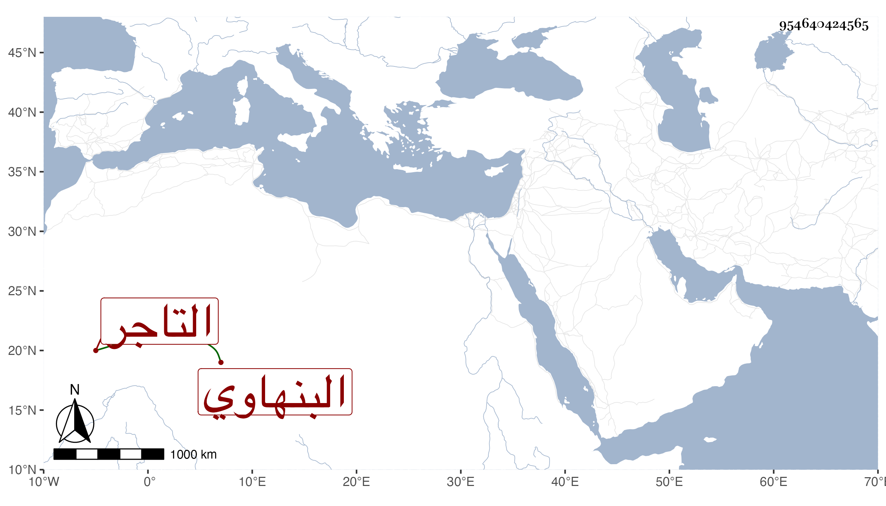

0902Sakhawi.DawLamic.ITO20230111-ara1.EIS1600.954640424565
Biography ID: 954640424565
300
محمد بن الشهاب أحمد البنهاوي التاجر . مات في ذي القعدة سنة إحدى وأربعين . أرخه شيخنا وقال أن المتحدث عليه استولى على موجود أبيه ولعله يزيد على عشرين ألف دينار فقام اثنان فادعيا أنهما ولدا عمه عصبة فصالحهما وكذا ناظر الخاص بما مجموعه لايفي بثلث الموجود قال وكان المخبر بذلك من باشر العرض والبيع وضبطه ومع ذلك فلم يلتفت المحدث لهذا وركب طريق الإنكار وإن الذي دفعه هو الذي استولى عليه من غير زيادة .
